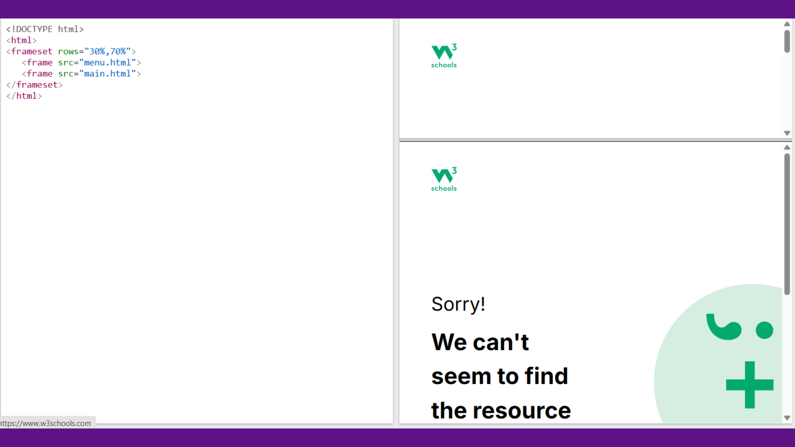
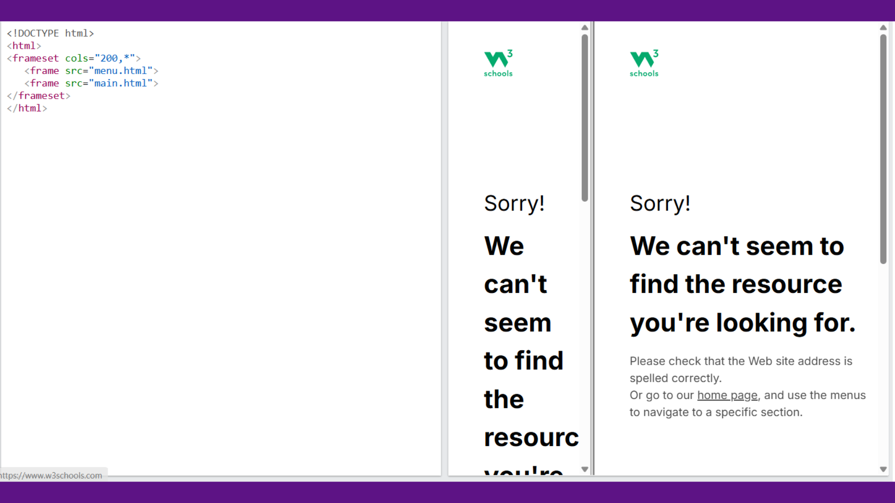
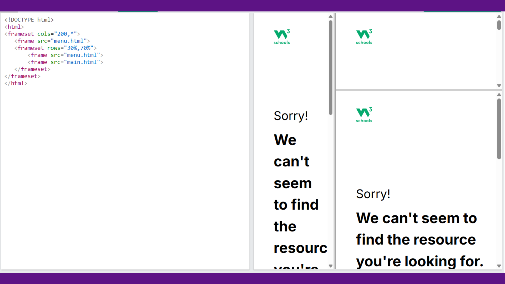

HTML frames were used to divide a browser window into multiple rectangular sections, where each section could load a separate HTML document independently. This allowed developers to display multiple pages within a single browser window and create multi-pane layouts for websites.
Frames were commonly used to keep certain elements visible while others changed.
The [frame] tag is no longer recommended as it is not supported by HTML5, modern web development recommends using techniques like CSS layouts or iframes instead.
A page that uses frames is called a frameset document. Instead of the normal [body] element, it uses the [frameset] element to define how the browser window is divided.
The [frameset] tag determines the layout of the frames by specifying rows or columns that divide the window into sections. Each section can then contain a separate HTML document.
Framesets can also be nested, allowing more complex layouts with multiple rows and columns inside other frames.
The [frameset] tag defines how the browser window is divided into frames. Instead of placing content directly in the page, it organizes the layout structure of frames.
Common Attributes
| Attribute | Description |
|---|---|
| rows | divides the window horizontally into rows |
| cols | divides the window vertically into columns |
| border | sets the border width of frames |
| frameborder | enables or disables borders between frames |
| framespacing | controls spacing between frames |
Frame sizes can be defined using:
The [frame] tag is used inside a [frameset] to define each individual frame and load a specific document into it. Each frame functions independently and can display different content.
Common Attributes
| Attribute | Description |
|---|---|
| src | specifies the URL of the document to display in the frame |
| name | gives a name to the frame so links can target it |
| scrolling | controls whether scrollbars appear |
| marginwidth / marginheight | defines spacing between frame borders and content |
| frameborder | controls frame borders |
The [noframes] element provides alternative content for browsers that do not support frames. This ensures users can still access some information even if frames cannot be displayed.
Frames can be arranged in horizontal rows or vertical columns.
Horizontal Frames - Use the rows attribute to divide the page into horizontal sections.
Vertical Frames - Use the cols attribute to divide the page vertically.
Nested frames
